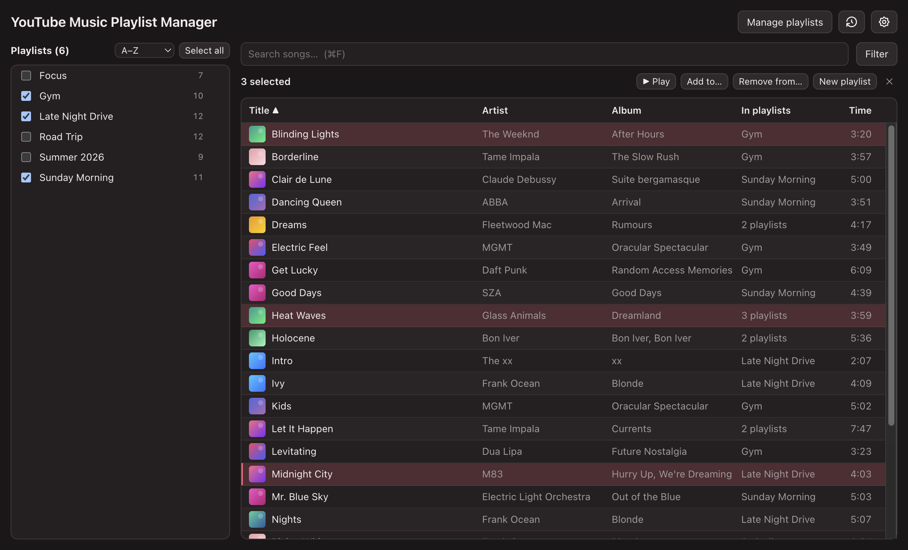
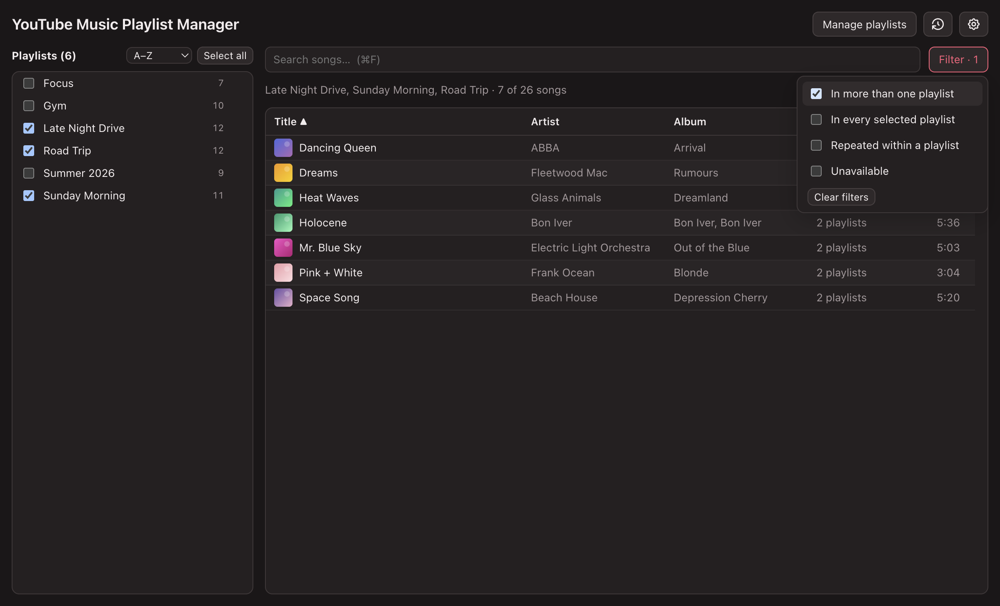
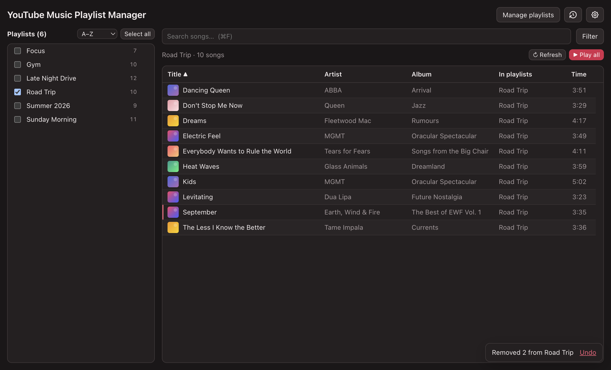
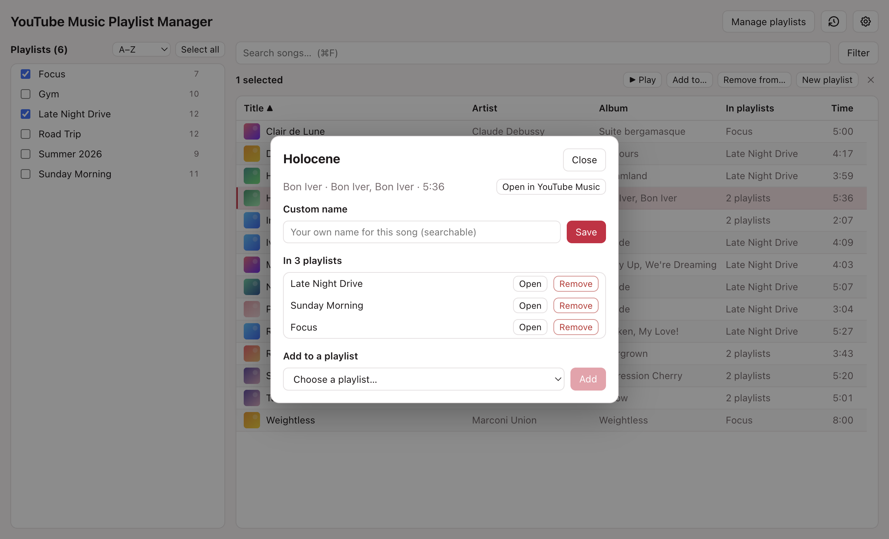

One list
See every playlist at once, then act on it
Tick the playlists you want and their songs appear together, each song once. Select songs to play them in YouTube Music, add them to another playlist, or start a new one.

See several playlists as one list, find the songs they share or repeat, and tidy them up, with an undo when you change your mind. Free for Mac.

One list
Tick the playlists you want and their songs appear together, each song once. Select songs to play them in YouTube Music, add them to another playlist, or start a new one.

Filters
Show only songs in more than one playlist, songs every selected playlist has in common, songs listed twice in the same playlist, or songs that are no longer available.

Undo
Add or remove songs and your playlists on YouTube Music update right away. Removed the wrong ones? Click Undo, or press ⌘Z, and they go back exactly where they were.

Details
Open any song to see which playlists it's in, add it to another, or give it your own searchable name. The app follows your Mac's appearance, or pick light or dark.

Turn any selection into a queue and open it in YouTube Music with one click.
Clear out extra copies of a song in a playlist, keeping the first in its place.
Deleted a playlist by mistake? Recreate it with the same songs.
Save any playlist's songs as a spreadsheet.
Arrow keys, ⌘A, ⌘F, Delete and ⌘Z work the way you'd expect.
Paste a link to bring in playlists you don't own, alongside your own.
Get the latest .dmg using the button above.
Open it and drag YouTube Music Playlist Manager into Applications.
Sign in with Google on Google's own page, then pick the playlists you want to see.
Requires macOS 12 or later. Already have it? Use Settings → Check for updates in the app.
You sign in on Google's own page, and the app never stores your password. It keeps the session Google gives it, encrypted with a key held in your Mac's keychain, and your library is saved only on your Mac. The app has no analytics or tracking.
Yes, and it's open source. The code is on GitHub.
The app can copy a public Spotify playlist into YouTube Music, matching songs where it's confident. YouTube Music can also transfer playlists itself, under Settings → Privacy & data → Transfer playlists.
Not of this app. An older, simpler Python version runs on Windows and Linux; its downloads are below.
No. It's an independent project, not affiliated with or endorsed by YouTube or Google.